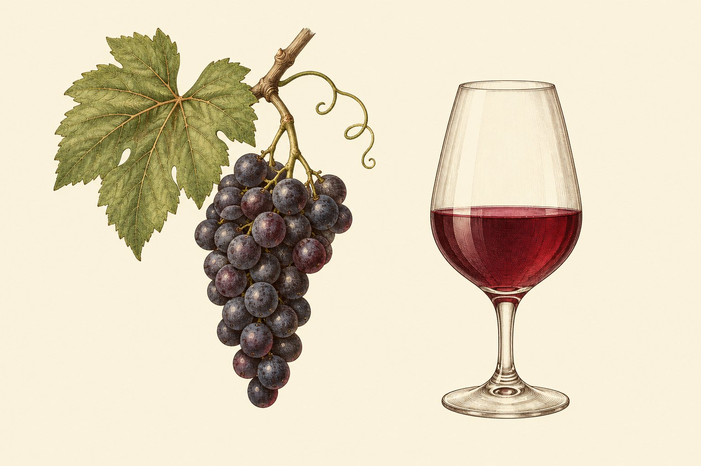

Ce support accompagne une soirée d'initiation : d'abord apprendre à déguster, ensuite comprendre comment la vigne et le chai font le goût du vin. Il remplace l'ancien polycopié, corrigé sur les points dépassés et complété (rosés, effervescents, défauts, familles d'arômes, étiquette, lexique).
Seule la dégustation juge la qualité d'un vin. Une analyse de laboratoire mesure l'alcool, l'acidité ou le sucre, mais deux vins aux chiffres presque identiques peuvent être, l'un un vin courant, l'autre un grand cru. L'analyse aide la dégustation ; elle ne la remplace pas.
Forme tulipe, cristallin fin, incolore, tenu par la tige ou le pied
Trop froid, le vin se ferme et ses tanins durcissent ; trop chaud, l'alcool ressort. Ce sont des repères : le goût du convive passe avant.
| Type de vin | Température de service |
|---|---|
| Liquoreux | 6 à 8 °C |
| Effervescents | 6 à 10 °C |
| Blancs et rosés légers | 7 à 10 °C |
| Blancs puissants, boisés | 10 à 13 °C |
| Rouges légers (ex. beaujolais) | 13 à 18 °C |
| Rouges moyens à corsés | 15 à 18 °C |
Repères du WSET. La Bourgogne (BIVB) sert ses blancs un peu plus chauds : 10 à 12 °C pour un blanc vif comme l'aligoté, 12 à 14 °C pour les autres. Pour le champagne, le Comité Champagne conseille 8 à 10 °C.
Astuce : l'eau glacée refroidit bien plus vite que l'air. Un seau moitié eau, moitié glace rafraîchit une bouteille en une trentaine de minutes.
La vue. Premier contact : limpidité, éclat, intensité et teinte de la robe, puis les « larmes » qui coulent sur la paroi quand on fait tourner le verre. Un vin trouble ou voilé signale souvent un problème (sauf vin volontairement non filtré).
L'odorat. C'est le sens le plus riche. On sent le vin deux fois : en humant le verre (voie directe, l'« odeur ») puis en bouche, quand le vin réchauffé libère ses parfums vers l'arrière-gorge (voie rétronasale, l'« arôme de bouche »). Nous avons environ 400 types de récepteurs olfactifs, et deux personnes diffèrent sur près d'un tiers d'entre eux : nous ne sentons pas tous la même chose. L'odorat s'entraîne et se mémorise.
Par le nez (voie directe) puis par la bouche (voie rétronasale)
Le goût. La langue ne perçoit que des saveurs : sucré, acide, amer, salé et umami.
La « carte de la langue » des anciens manuels est une idée fausse
Le toucher. En bouche, on sent la température, la viscosité, le volume, le piquant du gaz, la chaleur de l'alcool et l'astringence des tanins (la bouche qui « sèche »). Ce sont des sensations tactiles, pas des saveurs.
L'ouïe. Elle sert peu, sauf pour les bulles des effervescents… et pour trinquer.
Toutes les grilles sérieuses suivent le même ordre ; celle du WSET, utilisée dans le monde entier, tient en quatre blocs : aspect, nez, bouche, conclusions.
Regarder le disque et surtout le bord, verre incliné sur fond blanc
Un vin peut être « fermé » : il sent peu, puis s'ouvre à l'air. Revenir sur les verres en fin de séance.
Un blanc sec se joue sur deux forces : l'acidité (fraîcheur) et le moelleux (alcool, glycérol, sucre éventuel). Trop d'acidité : vert, dur, mordant. Pas assez : plat, mou. Pour un rouge, une troisième force s'ajoute, les tanins : acidité et tanins durcissent ensemble, le moelleux les enrobe.
Blanc : deux forces qui se répondent. Rouge : une troisième s'ajoute, les tanins.
| Vin | À regarder en priorité |
|---|---|
| Rouge | Couleur et bord du disque ; force des tanins (de lisse à âpre) et surtout leur grain (soyeux, velouté, ou rêche, grossier). |
| Blanc | Éclat et reflets ; netteté et intensité du nez ; équilibre acidité-moelleux. Sa longueur se lit plus facilement, sans tanins pour la masquer. |
| Rosé | Teinte (de pâle à soutenue), fraîcheur, fruit. Un rosé pâle n'est pas forcément meilleur : la couleur dit surtout la méthode. |
| Effervescent | Finesse et persistance des bulles ; la mousse en bouche (crémeuse ou agressive) ; le dosage en sucre (brut, extra-brut…). |
Les tanins se décrivent souvent avec des mots de tissus (soie, satin, velours, suède) ou de matières (talc, craie, sable fin, papier de verre). La Revue du vin de France propose ainsi de ranger les textures en grandes familles, des plus agréables (souple, charnu, enrobant) aux plus dures (asséchant, rugueux, vert).
Un vin contient de l'ordre de mille composés volatils, dont la plupart restent sous le seuil de perception. On les classe selon leur origine :
Classement par origine. Attention : écoles française et WSET ne rangent pas tout pareil.
Pour nommer une odeur, cherchez d'abord sa famille, puis précisez. Émile Peynaud et Jacques Blouin proposent dix séries, faciles à retenir car elles suivent à peu près la vie du vin : végétale, florale, fruitée, éthérée, chimique, balsamique, boisée, épicée, empyreumatique (brûlée), animale. On peut les regrouper en quatre grandes familles.
Dix séries, regroupées en quatre grandes familles, à peu près dans l'ordre où elles apparaissent dans la vie d'un vin
D'après la classification en dix séries d'É. Peynaud et J. Blouin (Le Goût du vin) ; exemples choisis pour le cours.
Trois conseils :
Un défaut se repère d'abord au nez. Les seuils varient beaucoup d'une personne à l'autre : certains ne perçoivent pas un goût de bouchon qui gêne leur voisin.
Un défaut se repère d'abord au nez ; certains ne gênent que certaines personnes
| Défaut | Cause | Indices |
|---|---|---|
| Goût de bouchon | TCA (trichloroanisole) et molécules voisines, venant du liège mais aussi parfois du bois du chai | Carton mouillé, cave humide ; le fruit est éteint |
| Oxydation | Trop d'air | Robe brunie, fruit perdu, notes de caramel ou de café |
| Réduction | Composés soufrés, faute d'air | Œuf pourri, chou ; peut s'atténuer en carafe |
| Brettanomyces | Levure d'altération, souvent en élevage sous bois | Écurie, cuir, médicinal |
| Acidité volatile | Bactéries acétiques | Vinaigre ; à forte dose, colle ou dissolvant (acétate d'éthyle) |
Le genre Vitis compte une soixantaine d'espèces (davantage selon les bases botaniques récentes). Une seule fait la quasi-totalité du vin du monde : Vitis vinifera, la vigne européenne, domestiquée il y a plusieurs millénaires. Les espèces américaines donnent des vins au goût dit « foxé » (fraise, bonbon), peu apprécié.
Dans Vitis vinifera, on distingue des milliers de cépages (variétés). Un vin issu d'un seul cépage est un vin de cépage ; plusieurs cépages complémentaires donnent un vin d'assemblage.
Trois fléaux venus d'Amérique ont failli détruire le vignoble européen :
| Fléau | Nature | Arrivée en France | Parade |
|---|---|---|---|
| Oïdium | Champignon | 1847 | Le soufre |
| Phylloxéra | Insecte (puceron) qui attaque les racines | 1863 | Greffer sur des porte-greffes américains |
| Mildiou | Champignon (au sens large) | 1878 | La bouillie bordelaise (cuivre), en 1885 |
Laissée à elle-même, la vigne grimpe aux arbres ou s'étale en buisson et donne beaucoup de bois et peu de bons raisins. Le vigneron choisit donc la densité de plantation, l'orientation des rangs, la taille et le palissage (fils de fer qui guident la végétation). Dans les appellations, le cahier des charges encadre ces choix.
Les vieilles vignes, aux racines profondes, donnent souvent moins de raisins mais plus concentrés. La mention « vieilles vignes » n'a pourtant aucune définition légale.
Le terroir, c'est la rencontre en un lieu d'un sol, d'un sous-sol, d'une pente, d'un climat, d'une plante (cépage et porte-greffe) et du travail des hommes. Ce n'est pas seulement la chimie du sol.
La vigne démarre sa croissance au-dessus d'environ 10 °C (le « zéro de végétation »). Il lui faut assez de chaleur pour mûrir, un hiver pour se reposer, et idéalement une maturation lente et complète. Trop de chaleur donne des vins lourds, moins frais.
Deux bandes tempérées, de part et d'autre de l'équateur, qui glissent vers les pôles
Chaque année a sa météo : c'est l'effet millésime. Il faut de l'eau au printemps pour la pousse, mais un temps sec, chaud et ensoleillé pendant la maturation et les vendanges. La pluie sur des raisins mûrs les gonfle, les dilue et favorise la pourriture.
En trente ans, les vendanges ont avancé de deux à trois semaines dans la plupart des régions. À Beaune, elles commencent en moyenne vers le 15 septembre sur 1988-2018, contre le 28 septembre sur les six siècles précédents. Conséquences : vins plus riches en alcool, moins acides, et nouveaux vignobles plus au nord.
| Période | La plante | Le vigneron |
|---|---|---|
| Décembre à mars | Repos (dormance), puis « pleurs » de sève aux plaies de taille | Taille ; la Saint-Vincent (22 janvier) en est la fête traditionnelle |
| Mars-avril | Débourrement : les bourgeons s'ouvrent ; risque de gel | Travail du sol, palissage |
| Mai | Pousse rapide des rameaux | Ébourgeonnage, épamprage (on retire les pousses inutiles), traitements |
| Juin | Floraison puis nouaison (la fleur devient petit grain) ; la pluie et le froid peuvent faire « couler » les fleurs | Relevage et accolage des rameaux, rognage |
| Juillet-août | Les grains grossissent, puis véraison : ils changent de couleur | Vendange en vert si trop de grappes, effeuillage |
| Fin août à octobre | Maturité, puis vendanges | Contrôle de maturité, vendanges |
| Novembre | Chute des feuilles, retour au repos | Buttage, entretien |
Les viticulteurs repèrent ces étapes par des stades notés de A à P (échelle de Baggiolini) ou par des codes chiffrés (échelle BBCH) : voir l'infographie ci-après.
Échelle de Baillod et Baggiolini (hémisphère nord) : du bourgeon d'hiver à la chute des feuilles, en passant par la fleur et le fruit
D'après les stades décrits dans Mille Vignes (p. 62). Les dates bougent avec le climat : en 30 ans, les vendanges ont avancé de 2 à 3 semaines dans la plupart des régions.
Chaque partie apporte autre chose au vin
La baie vit trois phases : une phase herbacée (de la nouaison à la véraison : baie verte, dure, acide), la maturation (de la véraison à la maturité : elle grossit, s'assouplit, se colore et stocke du sucre), puis parfois la surmaturation (laissée sur pied, elle se concentre : passerillage, ou pourriture noble due à Botrytis cinerea). Entre la floraison et la maturité, il s'écoule environ cent jours, un peu plus ou un peu moins selon le cépage, le lieu et le style visé.
Allure générale des courbes (pas d'échelle chiffrée : elle varie selon cépage et millésime)
La date dépend du vin visé (on attend plus longtemps pour un liquoreux que pour un blanc sec ou une base d'effervescent), de l'état sanitaire des raisins et de la météo annoncée. Vendanger trop tôt donne des vins verts ; trop tard, des vins lourds, ou des raisins abîmés par la pluie.
Quelques semaines avant la récolte, le vigneron prélève régulièrement des baies au hasard sur toute la parcelle, des deux côtés du rang. Il mesure :
Au Moyen Âge, le seigneur fixait le jour à partir duquel on pouvait vendanger. Pour les vins d'appellation en France, la date de début reste aujourd'hui fixée par un arrêté du préfet, sur proposition de l'INAO et des syndicats d'appellation (ODG). Beaucoup de villages en ont gardé une fête.
La vendange manuelle permet de trier dès la vigne et garde les grappes entières (indispensable pour certaines méthodes, comme la macération carbonique ou les vins de Champagne). La machine secoue le pied pour détacher les baies : elle est rapide et permet de récolter la nuit, au frais.
Températures de fermentation, à titre de repère : de 12 à 22 °C pour les blancs (plus frais pour garder le fruit), environ 12 à 16 °C pour les rosés de pressurage, de 20 à 32 °C pour les rouges (plus chaud pour extraire davantage).
Tout se joue sur le moment où l'on sépare le jus des peaux, car c'est la peau qui donne couleur et tanins. Le jus de presque tous les raisins noirs est incolore : on peut faire du blanc avec du raisin noir (le pinot noir des champagnes blancs).
Ce qui change tout : quand on sépare le jus des peaux
Le gaz carbonique fait remonter peaux et pépins ; on le travaille pour extraire couleur et tanins
La chaptalisation (ajout de sucre au moût pour gagner en degré) est strictement encadrée par l'Union européenne : la hausse permise dépend de la zone viticole (au plus 3 % vol. dans les zones les plus fraîches, 1,5 % dans les plus chaudes) et elle est interdite dans certaines régions.
Variante : une courte macération pelliculaire (quelques heures de contact jus-peaux avant pressurage) donne plus d'arômes et moins d'acidité.
Mélanger du vin rouge et du vin blanc ? En Europe, le champagne rosé est le seul vin de qualité fait ainsi ; les rosés tranquilles d'appellation sont vinifiés par pressurage ou saignée.
Toujours le même principe : du CO₂ de fermentation piégé dans le vin
Un mousseux a au moins 3 bars de pression à 20 °C ; un pétillant, entre 1 et 2,5 bars.
Entre la fin des fermentations et la mise en bouteille, le vin est trouble, brut, encore gazeux. L'élevage l'affine : sa couleur se stabilise, il s'assouplit, il se clarifie, et son bouquet commence à se former. Il dure de quelques semaines pour un vin primeur à deux ans ou plus pour un grand vin de garde.
Le bois doit rester au service du vin : trop de fût neuf masque le fruit et rend les vins semblables.
| Opération | À quoi ça sert |
|---|---|
| Soutirage | Transvaser le vin pour le séparer de ses dépôts (lies) ; il l'aère un peu |
| Ouillage | Remplir les fûts pour compenser l'évaporation et éviter l'air |
| Bâtonnage | Remettre les lies fines en suspension : plus de gras (surtout en blanc) |
| Collage | Ajouter une colle (protéines d'œuf, de lait, végétales, ou bentonite) qui entraîne les particules et adoucit les tanins |
| Filtration | Rendre le vin limpide et stable avant la mise |
| Stabilisation tartrique | Éviter les petits cristaux en bouteille (sans effet sur le goût) |
| Sulfitage | Le SO₂ protège de l'oxydation et des microbes ; seul le SO₂ « libre » protège vraiment |
Les dépôts en bouteille (cristaux de tartre, dépôt des vieux rouges) sont naturels et sans danger : on carafe le vin pour les laisser au fond.
Un élevage réducteur (peu d'air) protège les arômes fragiles mais peut donner des odeurs soufrées. Un élevage oxydatif (un peu d'air) assouplit et stabilise. Trop d'air, et c'est l'oxydation.
Une étiquette obéit à des règles européennes précises ; une fiche technique, elle, est libre. Savoir lire les deux, c'est savoir ce que le producteur est obligé de dire, ce qu'il choisit de dire, et ce que les chiffres révèlent du vin.
Étiquette fictive. Rouge : mentions obligatoires. Doré : mentions facultatives encadrées.
Les mentions obligatoires doivent se lire ensemble, sans tourner la bouteille (sauf lot, allergènes, importateur).
| Mention | Ce qu'il faut savoir |
|---|---|
| Catégorie (« vin », « vin mousseux »…) | Peut être omise pour un AOP ou un IGP qui affiche son nom d'appellation |
| Appellation ou indication géographique | « Appellation d'origine protégée » ou « contrôlée » + nom ; « indication géographique protégée » ou « vin de pays » + nom |
| Titre alcoométrique | En % vol., par unité ou demi-unité ; tolérance de ± 0,5 % vol. sur le chiffre affiché |
| Provenance | Le pays (« Produit de France ») |
| Embouteilleur | Nom et commune (« mis en bouteille par… ») ; pour un vin importé, l'importateur |
| Volume nominal | 75 cl, 37,5 cl, 150 cl… |
| Allergènes | « Contient des sulfites » au-delà de 10 mg/L ; aussi l'œuf ou le lait s'ils ont servi au collage |
| Numéro de lot | Souvent précédé d'un « L » |
| Teneur en sucre | Obligatoire seulement pour les effervescents (brut nature, extra-brut, brut, extra-sec, sec, demi-sec, doux) |
| Énergie + ingrédients et nutrition | Voir ci-dessous |
Les mentions principales doivent pouvoir se lire ensemble, sans tourner la bouteille ; elles peuvent être sur la contre-étiquette. Le lot, les allergènes et l'importateur peuvent figurer ailleurs.
Les vins produits depuis cette date (en pratique, surtout à partir du millésime 2024) doivent donner la liste des ingrédients et une déclaration nutritionnelle. Sur la bouteille, seule la valeur énergétique est obligatoire (par exemple « E (100 ml) : 328 kJ / 79 kcal »), avec les allergènes ; le reste peut passer par un QR code. Ce QR doit mener directement à la page du vin, être signalé comme « ingrédients » ou « nutrition », et ne contenir ni publicité ni suivi des visiteurs.
Obligatoire sur les bouteilles vendues en France (ou une phrase équivalente). Nous n'avons pas trouvé d'obligation équivalente en Belgique : à vérifier avant d'en parler comme d'une règle.
| Mention | La règle |
|---|---|
| Millésime | Au moins 85 % de raisins de l'année (100 % en Champagne) |
| Cépage | Un seul cépage nommé : au moins 85 % ; plusieurs : 100 % des cépages cités, par ordre d'importance |
| « Mis en bouteille au château / au domaine » | Réservé aux AOP et IGP ; raisins de l'exploitation, vinifiés et mis en bouteille sur place |
| « Château », « clos », « cru » | Réservés aux vins d'appellation |
| « Grand cru », « premier cru », « cru classé » | Seulement si le cahier des charges de l'appellation le prévoit |
| « Vieilles vignes » | Aucune définition légale : le producteur doit seulement pouvoir la justifier. L'OIV a proposé en 2024 un repère non obligatoire : 35 ans et plus |
| « Élevé en fût de chêne » (AOP/IGP en France) | Au moins 6 mois sous bois pour au moins la moitié du vin (règle française, une seule source vérifiée) |
| Médailles | Seulement celles des concours reconnus par le ministère |
| Bio | Logo européen (eurofeuille) obligatoire dès qu'on revendique le bio ; logo AB facultatif |
En France, du plus encadré au plus libre :
Une fiche technique n'est pas réglementée : elle informe, mais elle vend aussi. On y trouve souvent :
| Chiffre | Comment le lire |
|---|---|
| Sucres résiduels (g/L) | Un vin tranquille peut s'appeler « sec » jusqu'à 4 g/L (9 g/L si son acidité est assez forte), « demi-sec » jusqu'à 12 g/L (ou 18 g/L) ; l'acidité masque une partie du sucre |
| Acidité totale (g/L) | Vérifiez l'unité : la France l'exprime souvent en équivalent acide sulfurique (H₂SO₄), d'autres pays en acide tartrique. Pour convertir : tartrique = H₂SO₄ × 1,53 (3,85 g/L H₂SO₄ ≈ 5,9 g/L tartrique) |
| pH | Plus il est bas, plus le vin est acide et stable ; le SO₂ y protège mieux |
| Rendement (hl/ha) | À comparer au maximum de l'appellation : nettement en dessous, souvent plus de concentration |
| Degré | À relier au climat, au millésime, au cépage |
Pistes de réponse : 3. Non : 85 % au moins suffisent (sauf règle plus stricte de l'appellation). 4. « Vieilles vignes », « grand vin » (hors cahier des charges), « cuvée prestige »…
Les mots du cours, du plus courant au plus technique, par ordre alphabétique.
| Mot | Définition |
|---|---|
| Acidité volatile | Surtout l'acide acétique ; un peu parfume le vin, trop le rend « piqué » (vinaigre, vernis) |
| Anthocyanes | Pigments rouges des peaux de raisins noirs ; ils font la couleur des rouges et se lient aux tanins en vieillissant |
| Assemblage | Mélange de cépages, parcelles, cuves ou millésimes pour un vin plus complet ou plus régulier |
| Astringence | Bouche qui sèche et râpe, causée par les tanins ; une sensation tactile, pas une saveur |
| Attaque | Première impression du vin en bouche |
| Bâtonnage | Remise en suspension des lies fines dans le fût ou la cuve, pour plus de rondeur |
| Barrique | Fût de chêne de 225 litres (modèle bordelais) |
| Botrytis / pourriture noble | Champignon qui, avec humidité puis temps sec, concentre les baies (liquoreux) ; avec une humidité persistante, c'est la pourriture grise, un défaut |
| Bouquet | L'ensemble des arômes d'un vin évolué |
| Brettanomyces | Levure d'altération : écurie, cuir, pansement |
| Caudalie | Unité de longueur en bouche : une seconde de persistance des arômes |
| Cépage | Variété de vigne cultivée (chardonnay, syrah…) |
| Chapeau de marc | Peaux et pépins remontés en surface pendant la fermentation d'un rouge |
| Chaptalisation | Ajout de sucre au moût pour gagner en degré ; ne rend pas le vin plus doux |
| Clone | Plants tous issus d'un même pied-mère, donc identiques |
| Collage | Clarification par une colle (œuf, gélatine, bentonite…) qui entraîne les particules au fond |
| Coulure | Chute des fleurs ou des jeunes baies à la floraison, souvent par temps froid et humide |
| Cuvaison | Séjour du moût avec les peaux et les pépins en cuve (vinification en rouge) |
| Débourbage | Élimination des bourbes du jus de blanc avant fermentation |
| Débourrement | Ouverture des bourgeons au printemps |
| Dégorgement | Expulsion du dépôt de levures du col d'un effervescent de méthode traditionnelle |
| Disque | Surface du vin vue du dessus ; son bord renseigne sur l'âge |
| Dosage | Sucre ajouté après le dégorgement, qui fixe le style d'un effervescent (brut, demi-sec…) |
| Élevage | Soins donnés au vin entre la fin des fermentations et la mise en bouteille |
| Foulage, éraflage | Éclater les baies ; séparer les baies de la rafle |
| Foxé | Goût musqué typique des vignes américaines (Vitis labrusca) |
| Gras | Sensation de rondeur, de douceur onctueuse (alcool, glycérol, lies) |
| Larmes (ou jambes) | Coulures sur la paroi du verre ; abondantes si le vin est riche en alcool ou en sucre |
| Lies | Dépôt de levures mortes après la fermentation ; les lies fines enrichissent le vin |
| Longueur, finale | Persistance des arômes après avoir avalé ou recraché |
| Macération carbonique | Raisins entiers en cuve sous gaz carbonique : rouges souples et très fruités (Beaujolais) |
| Mildiou | Maladie venue d'Amérique, qui aime la pluie ; traitée au cuivre |
| Millésime | Année de récolte |
| Moût | Jus de raisin non fermenté |
| Mutage | Arrêt de la fermentation par ajout d'alcool, pour garder du sucre (vins doux naturels) |
| Oïdium | Maladie à champignon (poudre grise) ; traitée au soufre |
| Ouillage | Remplissage des fûts pour compenser l'évaporation |
| Passerillage | Raisins desséchés sur pied ou sur claies, qui concentrent leurs sucres |
| Phylloxéra | Puceron américain qui tue les racines de la vigne européenne ; parade : le greffage |
| Pigeage, remontage | Enfoncer le chapeau de marc dans le jus ; arroser le chapeau avec le jus du bas de cuve |
| Polyphénols | Famille des tanins et des anthocyanes |
| Porte-greffe | Racines (d'origine américaine) sur lesquelles on greffe le cépage |
| Pressurage | Presser le raisin (blanc, rosé) ou le marc (rouge) pour en tirer le jus ou le vin |
| Rafle | Charpente de la grappe, riche en tanins |
| Réduction | Odeurs soufrées d'un vin qui a manqué d'air (œuf, chou) ; s'estompent parfois à l'aération |
| Rendement | Quantité produite par hectare, en hectolitres (hl/ha) |
| Robe | La couleur du vin et son aspect |
| Saignée | Rosé obtenu en tirant une partie du jus d'une cuve de rouge |
| SO₂ (sulfites) | Protège de l'oxydation et des microbes ; seule sa part « libre » protège |
| Soutirage | Transvaser le vin pour le séparer de ses dépôts |
| Tanins | Composés des peaux, pépins, rafle et bois, qui donnent structure et astringence |
| TCA | Molécule du goût de bouchon (carton mouillé) |
| Véraison | Changement de couleur des baies, début de la maturation |
Pour chaque critère, placez le vin sur une échelle plutôt que de chercher un mot rare.
| Critère | De… | …à |
|---|---|---|
| Limpidité | trouble, voilé | limpide, cristallin |
| Éclat | terne, mat | brillant, étincelant |
| Intensité de la robe | pâle, légère | soutenue, profonde |
| Intensité du nez | discret, fermé | expressif, puissant |
| Qualité du nez | simple, ordinaire | fin, élégant, racé |
| Attaque | fuyante | franche, ample |
| Acidité | plate, molle | vive, nerveuse… puis verte, mordante |
| Corps (structure) | fluet, léger | étoffé, charpenté, massif |
| Force des tanins | lisses, fondus | fermes, durs, âpres |
| Grain des tanins | grossier, rêche | velouté, soyeux |
| Longueur | courte, fugace | longue, persistante |
Cochez ce que vous percevez, dans l'ordre de la méthode ; une case par critère suffit.
Les faits de ce support ont été recoupés dans au moins deux sources quand c'était possible ; les points où les sources divergent sont signalés dans le texte.
Illustrations originales, créées pour ce cours ; l'étiquette de l'atelier est fictive.